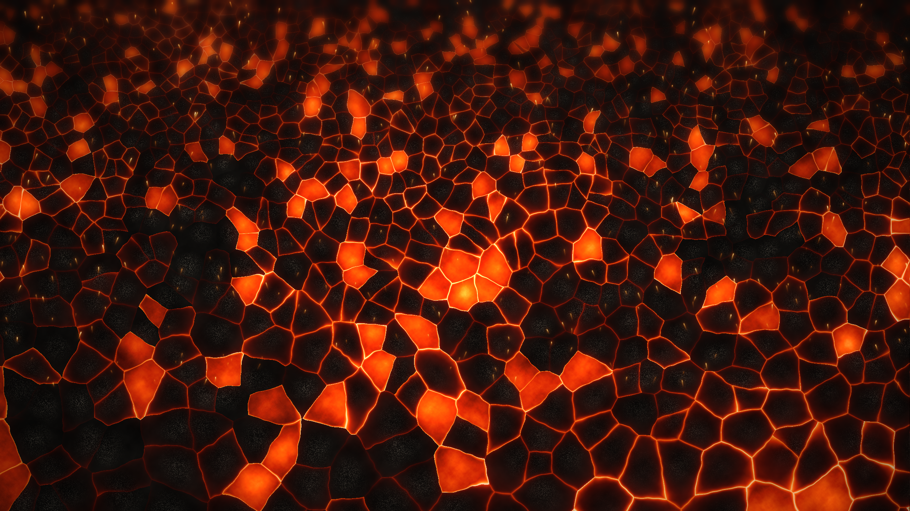
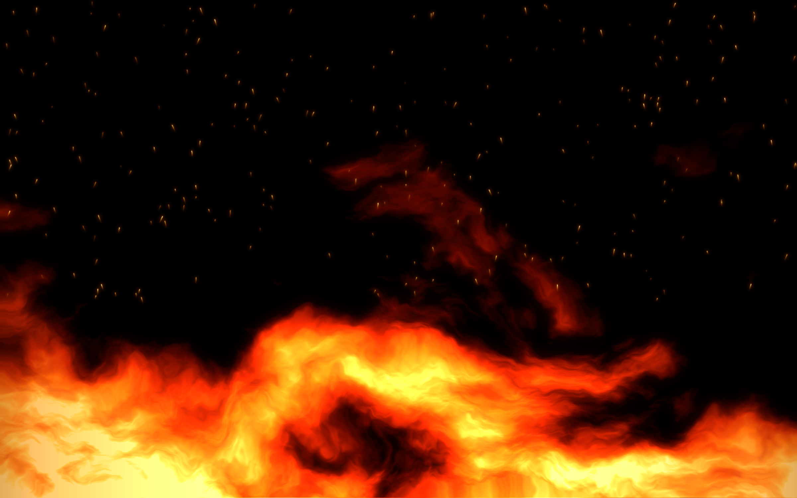
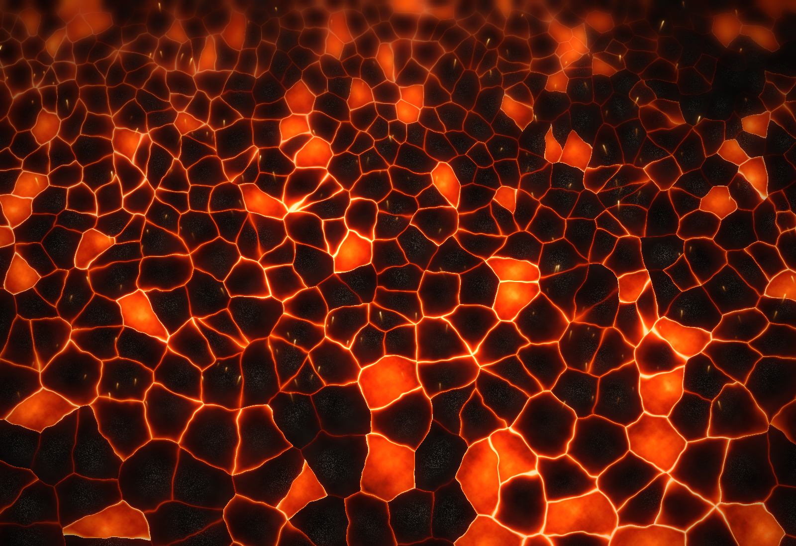
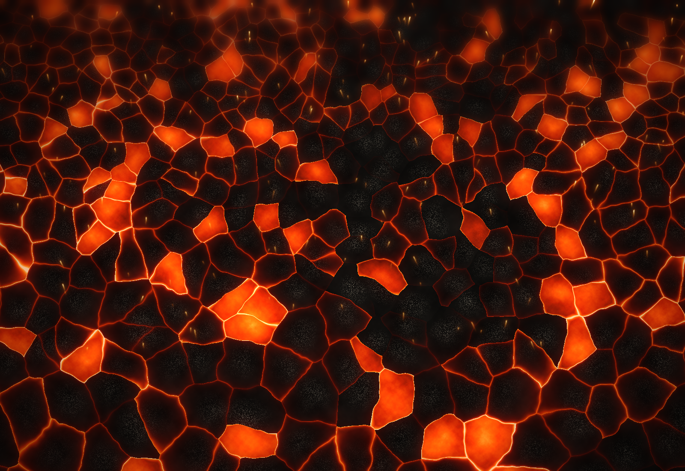
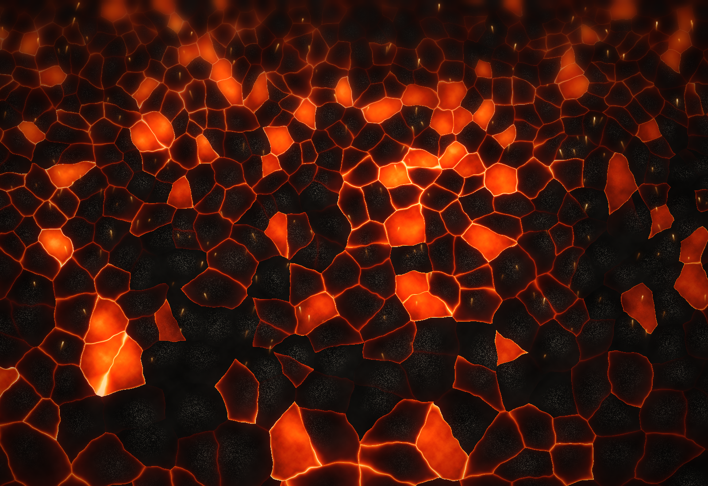
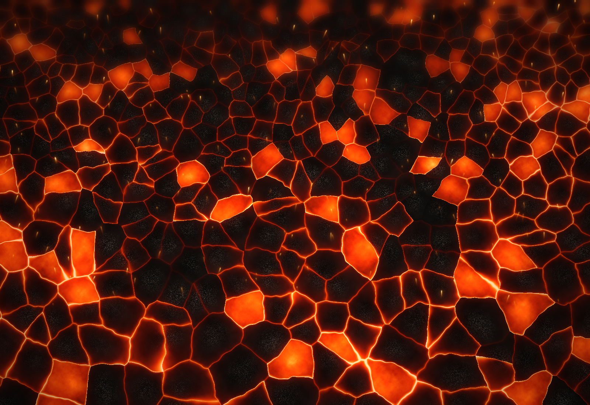
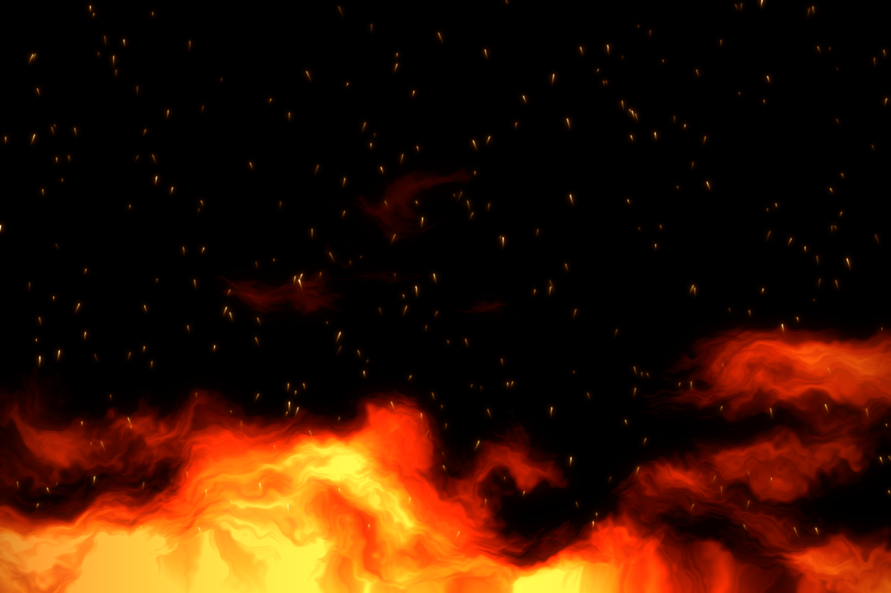

Odun ateşi · Köz · Duman
Ocakbaşı
Közün başında, ateşin ustalığıyla.

Ocaktan

Zırh kıyması, közde biber, sumaklı soğan.

Bir gece dinlenmiş but, meşe kömüründe.

Ateşin içinde kabuğu kararana kadar.

Kuyruk yağıyla, yüksek ateşte, hızlı.

Hikâye
Ateşi acele ettirmeyiz. Kömür kor olana kadar bekler, şişi ancak o zaman ocağa koyarız. Lezzet, beklemeyi bilenindir.